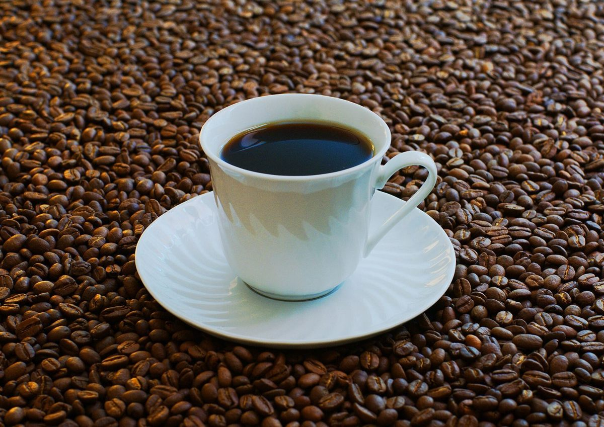
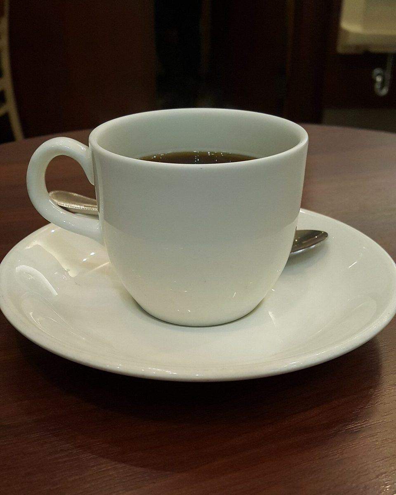

4スピードボタン
ひとこと置き場
カフェという業種から自然に考えられる声を、制作側が創作したものです。
以下は制作側が考えた創作のイメージ例で、実在のお客様の投稿ではありません。実際の口コミ・評価とは関係ありません。
営業時間などが分かったら、行ってみたいです。それまでは、Instagramの更新を楽しみにしています。
Instagramの投稿を、ゆっくりのぞいてみたいです。
お店のアカウントをフォローして、投稿を楽しみにしています。営業時間が分かったら、行ってみたいです。


